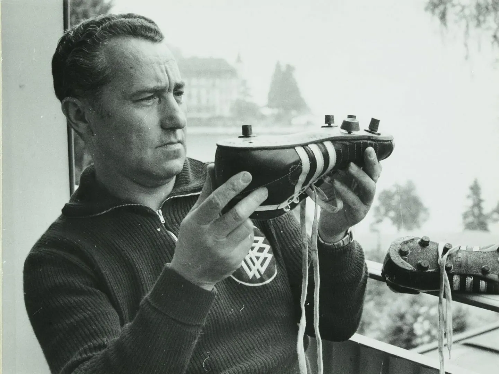

HISTORY OF ADIDAS

The name Adidas (written “adidas” by the company) is an abbreviation of the name of founder Adolf (“Adi”) Dassler. The Dassler family began manufacturing shoes after World War I. At the 1936 Berlin Olympics, the American track-and-field star Jesse Owens wore shoes that were reportedly a gift from Adi Dassler.